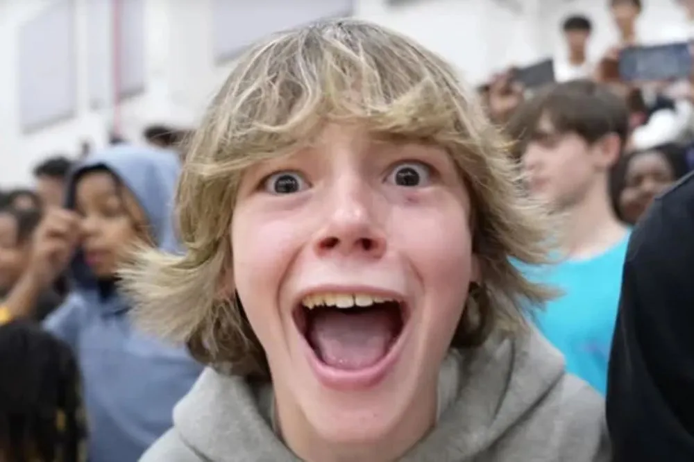
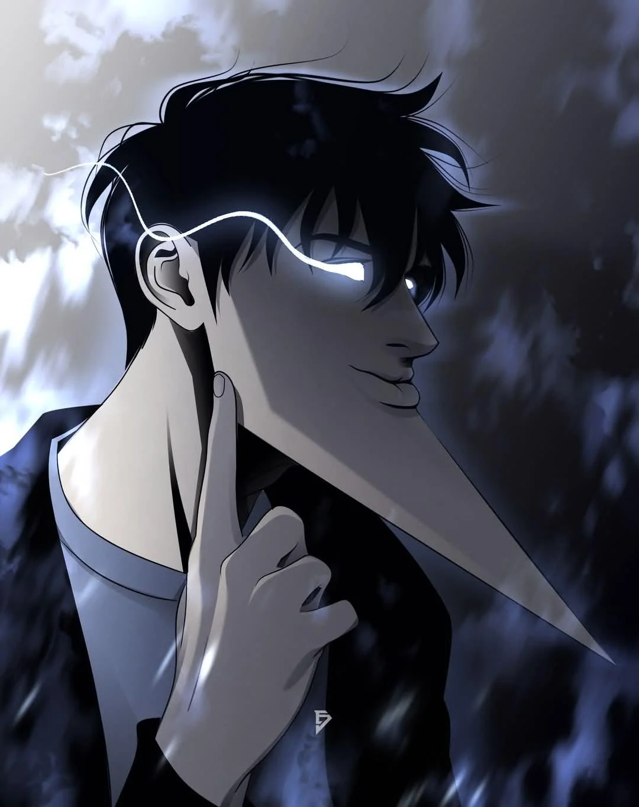
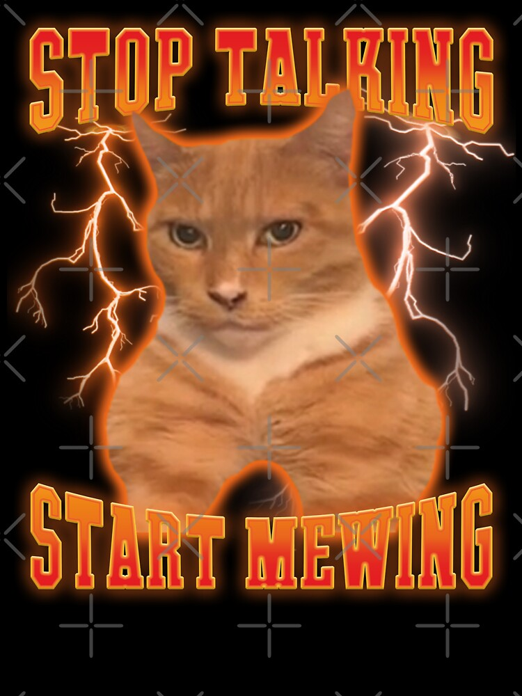

Você tem cortisol alto?
Você quer reduzir seu cortisol?
Ao tentar reduzir seu cortisol, você tem que escolher entre:
Você quer comer feijão com farinha?
Você decide virar um beta e ficar sem aura.
Estudando você descobre que feijão com farinha da muita aura
Ao acordar você sente mais aura saindo de você, porém está com fome.

Enquanto você prepara feijão com farinha, um louco grita six seven
Você levanta e sua aura exala por toda cidade

Você ganha mais 100000 de aura e se torna o mais aurudo(a) de COLOMBO.
após perder aura, você olha um beta com menos aura que você
Você mogga todos os habitantes do Paraná

Após recuperar sua aura você se dedica no looksmaxing e em ganhar aura